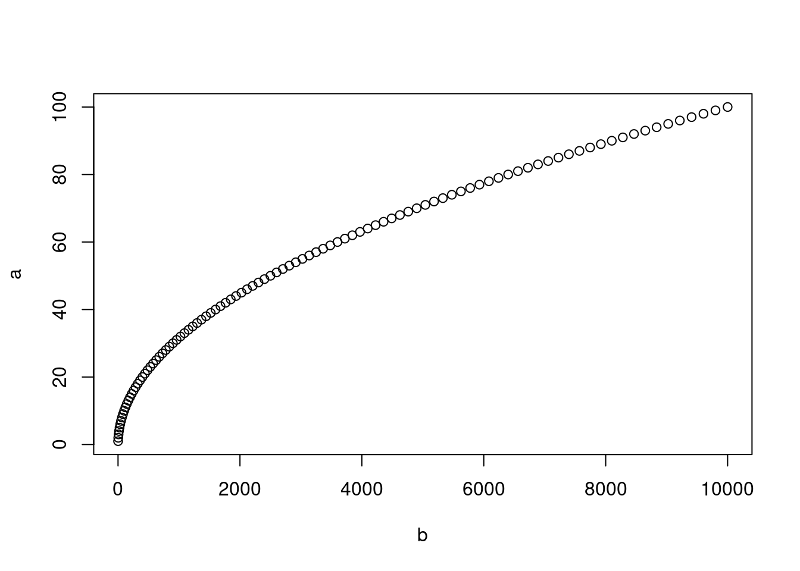

Chapitre 6 Les fonctions
6.1 Introduction
La plupart du temps, vous devrez utiliser des fonctions dans R pour effectuer les tâches voulues.
Les fonctions sont des outils qui permettent de simplifier l’utilisation de R. Elles permettent d’exécuter des opérations sur des objets sans avoir à spécifier chaque étape. Les fonctions sont des codes pré-existants dans R qui sont exécutés lorsque nécessaire. Ça permet de sauver du temps, car il n’est pas nécessaire de créer un code et de l’écrire à chaque fois qu’on doit l’utiliser.
Pour exécuter une fonction, vous devez l’appeler. L’appel d’une fonction est un raccourci vers le code de la fonction. Pour ce faire, il est nécessaire de spécifier des valeurs d’entrée qu’on nomme arguments (ou quelquefois paramètres). Après avoir lancé une fonction, R retourne une valeur de retour dans la console. La commande doit être structurée proprement en suivant les “règles de grammaire” du langage R (i.e. la syntaxe).
Un appel de fonction est structuré de la manière suivante : le nom de la
fonction suivi de parenthèses ( ). On insère les arguments séparés par
des virgules à l’intérieur des parenthèses :
nom_de_la_fonction(arg1, arg2, ...)
Voyons l’exemple de la fonction sum qui permet de faire la somme de
deux ou plusieurs nombres.
Les arguments sont des valeurs utilisées comme instructions pour que la fonction puisse retourner un résultat. Les objets peuvent être utilisés comme arguments :
## [1] 8La sortie, qui apparaît sur la dernière ligne, est la valeur de
retour de la fonction. Dans ce cas-ci, c’est la somme de a et b,
soit 8.
6.1.1 DÉFI 11
Créez un vecteur nommé
acontenant tous les nombres de 1 à 5
Créez un objet nommé
bavec une valeur de 2
Ajoutez a à b en utilisant l’opérateur
+et enregistrez le résultat dans un objet appeléresultat_add
Ajoutez a à b en utilisant la fonction
sum()et enregistrez le résultat dans un objet appeléresultat_sum
Comparez les objets resultat_add et resultat_sum. Sont-ils différents?
Ajoutez 5 à
resultat_sumen utilisant la fonctionsum().
Solutions
- Créez un vecteur nommé
acontenant tous les nombres de 1 à 5
- Créez un objet nommé
bavec une valeur de 2
- Ajoutez a à b en utilisant l’opérateur
+et enregistrez le résultat dans un objet appeléresultat_add
- Ajoutez a à b en utilisant la fonction
sum()et enregistrez le résultat dans un objet appeléresultat_sum
- Comparez les objets resultat_add et resultat_sum. Sont-ils différents?
## [1] 3 4 5 6 7L’opération sur le vecteur ajoute deux à chaque élément. Le résultat
est un vecteur.
## [1] 17La fonction sum() additionne toutes les valeurs de a et b. C’est
équivalent à 1 + 2 + 3 + 4 + 5 + 2. Le résultat est un nombre.
- Ajoutez 5 à
resultat_sumen utilisant la fonctionsum().
## [1] 226.2 Arguments
Tous les arguments ont un nom qui peut être indiqué lorsqu’on
appelle une fonction.
Pour indiquer le nom d’un argument lors d’un appel de fonction, il
suffit simplement de l’écrire de la façon suivante :
nom_argument=valeur:
Si le nom n’est pas indiqué, l’ordre des arguments est
primordial.
## [1] 3## [1] 0.3333333Si le nom est indiqué, l’ordre des arguments n’a pas d’importance.
## [1] 3## [1] 36.2.1 DÉFI 12
plot(x, y) est une fonction qui crée un graphique de y en fonction
de x. Cette fonction nécessite deux arguments nommés x et y.
Quelles sont les différences entre les lignes de codes suivantes ?
Solutions

Créer un graphique de b en fonction de a.

Créer un graphique de a en fonction de b. Les noms d’arguments ne
sont pas indiqués, donc l’ordre des arguments est primordial!
Créer un graphique de b en fonction de a. C’est le même graphique
que plot(a, b).

Créer un graphique de b en fonction de a. Les noms d’arguments sont
indiqués, donc l’ordre des arguments n’a pas d’importance.
À titre de référence, voici une liste de fonctions couramment utilisées dans R :
sqrt, log, exp, max, min, sum, mean, sd, var, summary, plot, par, paste, format,
head, length, str, names, typeof, class, attributes, library, ls, rm, setwd, getwd, file.choose,
c, seq, rep, tapply, lapply, aggregate, merge, cbind, rbind, unique,
help (or ?), help.search (or ??), help.start